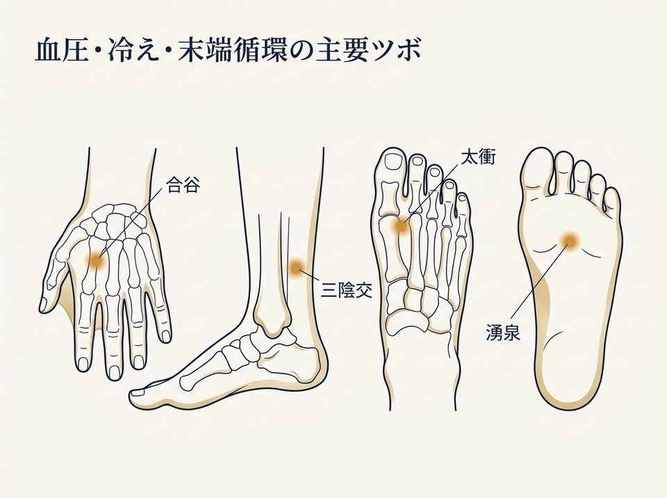

椎骨動脈解離の鍼灸
首の骨の中を通る椎骨動脈の内膜が裂ける重篤な血管疾患です。突然の頭痛は即救急受診が必須で、首への施術や操作は絶対禁忌です。


院長YouTube解説・関連動画
公開日：２０２２年 ５月１１日
更新日：２０２２年 １０月１０日
本日は椎骨動脈解離について解説させていただきます。
☆本記事の内容
- •椎骨動脈解離とは
- •椎骨動脈解離の原因
- •椎骨動脈解離の症状
- •椎骨動脈解離の改善方法
- •椎骨動脈解離のまとめ
- •椎骨動脈解離は、椎骨動脈の内膜に傷がつき、血管が裂けていく病気
- •椎骨動脈解離の原因は、スポーツや首を急に曲げる動作など
- •椎骨動脈解離の症状は、突然の頭痛
- •椎骨動脈解離の改善法は、入院して安静にし血圧の管理を行うこと
- •特に多く発症が見られるのは、若年者や働き盛りの男性
- •椎骨動脈解離の改善例
銀座そうぜん鍼灸院の宗前です。
このページを書いている私は、鍼灸師として１３年、担当した利用者様数８０，０００人を誇り、病気の休職者３００人を社会復帰できるまで回復させてきた実績があります。
椎骨動脈解離の改善例
例：50歳の女性、椎骨動脈解離と頭痛
50歳の女性が、突然の激しい頭痛とめまいを訴えて病院に行きました。頭痛は右側頭部から始まり、頸部にも広がっていると訴えています。また、めまいや吐き気も感じており、一時的に視界がぼやけることもあると言います。症状が非常に辛く、日常生活にも影響を及ぼすようになりました。
家族歴には、高血圧や心血管の病気がありますが、自身は特に健康面で問題を感じたことはありませんでした。右側頭部と頸部に触れると痛みを訴え、軽度の頸部の運動制限が確認されました。大きな異常はありませんでしたが、頸動脈のパルスはやや弱く感じられました。
椎骨動脈解離が疑われるため、画像での判断が行われることになりました。MRIとアンギオグラフィーにより、右側の椎骨動脈に解離が見られることが確認されました。また、解離部位近くに血栓が形成されていることも分かりました。この血栓によって、右側の椎骨動脈の血流が一部遮断されており、脳への血流に影響を及ぼしている状態でした。
椎骨動脈解離は重篤な状態であり、脳卒中や脳梗塞のリスクが高まるため、早急な改善を行うことが必要となります。この場合、解離が初期段階であり、血栓の形成も限定的であったため、保存的な方法が選択されました。
まず、頭部や首の急激な動きを避けるよう指導が行われました。また、血圧や血液凝固機能の異常がないことが確認されたため、血圧管理と抗凝固法は行われませんでした。その代わりに、症状の軽減を目的として鎮痛剤や抗めまい薬が処方されました。
安静を保ち、特に頭部や首の動きを制限しながら日常生活を送ることとなりました。頭痛やめまいが軽減されるにつれ、症状は改善していきました。数週間後には、頭痛は軽度になり、めまいや視界のぼやけも減少していることが確認されました。
定期的なフォローアップを受けながら、安静と症状の管理が続けられました。数カ月後には頭痛やめまいはほとんど消失し、頸部の運動制限も改善されました。MRIとアンギオグラフィーの結果も改善しており、解離部位の血流も回復していることが確認されました。
この場合、早期の発見と適切な改善が合併症を防ぎ、症状の改善につながりました。保存的な改善によって、手術や血栓除去を回避し、無理なく改善が行われたことが良い結果につながったと言えます。
椎骨動脈解離の改善方法は、個々の症例によって異なります。症状の重症度や解離の進行状況、年齢や健康状態に応じて、改善法が選択されます。
▼ 詳しく知りたい項目だけタップして開けます（全項目の医学解説を収録）
01. 原因とメカニズム
なぜ症状が起きるのか・鍼灸の作用機序を読む
▼
01. 原因とメカニズム
なぜ症状が起きるのか・鍼灸の作用機序を読む
首の骨の中を通って脳幹や小脳へ血液を送る椎骨動脈の内膜に傷がつき、血管壁の中に血液が入り込んで裂けていく病気です。若年者や働き盛りの男性にも多く、交通事故・スポーツ・首を急に曲げる動作や強い頸部刺激、高血圧、喫煙、血管壁の脆弱性などが関与します。裂けた血管が詰まると脳梗塞を、外へ破れるとくも膜下出血を引き起こす恐れがあり、入院安静と血圧管理が最優先です。
なぜ鍼灸で改善へ向かうのか？（作用機序の図解）
椎骨動脈解離に対する鍼灸は、心拍変動・血管トーンを整える自律神経サポート機序を通じて、お体本来の回復力を引き出します。
循環器専門医の標準治療を絶対前提とし、手首や背部の安全な経穴へ低刺激でアプローチします。
心臓への過剰な交感神経刺激を穏やかに鎮め、心拍リズムと血管緊張の急変を抑えます。
ストレスで固まりやすい胸郭や横隔膜の緊張を解き、酸素摂取とリラックス反応を促します。
内服管理を厳守しながら、疲労やストレスが引き金となる症状不安の軽減を支えます。
02. よくあるお悩み
このような症状はありませんか？（4項目）
▼
02. よくあるお悩み
このような症状はありませんか？（4項目）
- ✓経験したことのない突然の激しい後頭部痛や首の痛みがある（救急必須）
- ✓首の痛みに続いてめまい・ふらつき・吐き気が出た（救急必須）
- ✓視界のかすみ、顔のしびれ、ろれつが回りにくい（救急必須）
- ✓解離の治癒・安定後に残る全身の緊張や不安感を整えたい
03. 当院の施術アプローチ
施術の進め方・改善のポイントを見る
▼
03. 当院の施術アプローチ
施術の進め方・改善のポイントを見る
04. ツボ詳細・セルフケア一覧
脳卒中後遺症・嚥下・構音リハビリ併用のツボ図解（6穴）
▼
04. ツボ詳細・セルフケア一覧
脳卒中後遺症・嚥下・構音リハビリ併用のツボ図解（6穴）
実際の施術ではお一人おひとりの体質・症状に合わせて選穴しますが、脳卒中後の嚥下障害・構音障害・片麻痺リハビリ併用ケアの臨床でよく用いられる代表的なツボの目安です。
| ツボ名 | 位置の目安 | 主な狙い | セルフケアの注意点 |
|---|---|---|---|
| 百会（ひゃくえ） | 頭頂部の中央 | 覚醒度・神経可塑性・気分の安定サポート | 穏やかなタッチで頭部の緊張を緩めます。 |
| 風池（ふうち） | 後頭部の生え際のくぼみ | 項部筋の過緊張緩和・嚥下反射の補助 | 無理のない座位・側臥位で優しく刺激します。 |
| 廉泉（れんせん） | あごの下、のど仏の上のくぼみ | 舌骨上筋群・咽頭周囲の協調運動サポート | セルフでは強く押さず、専門家の施術に委ねます。 |
| 内関（ないかん） | 手首の横ジワから指3本分肘寄りの中央 | 自律神経の落ち着き・リハビリ時の不安軽減 | 健側・患側とも優しい圧で行います。 |
| 合谷（ごうこく） | 手の甲、親指と人差し指の間 | 上肢の循環促進・口腔顔面領域の遠隔調整 | 抗凝固薬服用中は内出血に注意し優しく押します。 |
| 足三里（あしさんり） | 膝の下外側、指4本分下 | 下肢の歩行リハビリ補助・胃腸機能サポート | 温めや軽いさすり刺激で循環を助けます。 |
05. 医学的根拠・国際査読論文（PubMed / Cochrane）
科学的エビデンス・出典リンク一覧（2件）
▼
05. 医学的根拠・国際査読論文（PubMed / Cochrane）
科学的エビデンス・出典リンク一覧（2件）
国際的な医学データベース（PubMed・Cochrane等）で報告されている動悸・狭心症・心拍自律調整領域の代表的な査読済み鍼灸研究をまとめています（標準治療との併用や研究上の限界を含めて正確に掲載）。
| 年・研究デザイン | 対象・規模 | 主な結果 | 限界・出典 |
|---|---|---|---|
| 2019年 大規模多施設RCT | 慢性安定狭心症 398名解析（標準薬物療法併用） | 標準薬への経穴鍼併用で狭心症発作頻度がシャム鍼比で有意に減少。 | 急性冠症候群の除外と循環器専門医の継続管理が必須。 JAMA Intern Med (PMID: 31355870) |
| 2025年 メタ解析 | 心拍変動（HRV）10 RCTs（n=744） | 副交感神経指標の上昇による心拍リズム安定作用を示唆。 | 不整脈の診断・治療は循環器科が最優先。 Front Neurosci (PMID: 41230507) |
参考文献・出典
- 2019年 大規模多施設RCT（慢性安定狭心症 398名解析（標準薬物療法併用））— JAMA Intern Med (PMID: 31355870)
- 2025年 メタ解析（心拍変動（HRV）10 RCTs（n=744））— Front Neurosci (PMID: 41230507)
06. よくある質問（FAQ）
よくあるご質問を見る（2件）
▼
06. よくある質問（FAQ）
よくあるご質問を見る（2件）
Q. 急に後頭部や首の後ろが激しく痛みました。首こりの鍼灸で対応してもらえますか？
いいえ、突然発症した強い後頭部痛や首の痛みは椎骨動脈解離の可能性があり、首への施術は脳梗塞やくも膜下出血を招く極めて危険な行為です。直ちに脳神経外科を受診してください。
Q. 椎骨動脈解離が保存療法で落ち着きましたが、今後ずっと首の施術は受けられませんか？
安全を最優先とし、椎骨動脈解離の既往がある方への頸部への直接施術や強い操作は行いません。MRIで安定が確認され主治医の許可がある場合のみ、手足など遠位部を使った安全な体調ケアをご相談いただけます。
あわせて読まれる関連疾患（循環器のお悩み）
静脈の血栓が心臓の右左シャントを通って脳血管を塞ぐ脳梗塞です。急性期は救急対応を最優先し、安定期の回復・予防を支えます。
夜間や安静時に心室細動を起こし得る遺伝性不整脈疾患です。循環器専門医での厳重な管理を最優先に、安定期のストレス管理を支援します。
おへそが飛び出し腸管などが脱出する状態です。激しい痛みや戻らない膨らみは緊急受診が必須、安定期の腹圧対策等を補完支援します。
動脈血中の酸素が不足した状態です。医療機関での酸素投与と原因疾患の治療を最優先に、安定期の呼吸環境や疲労感をサポートします。
水分の過剰摂取で血液のナトリウム濃度が急低下する危険な状態です。急性期は救急対応が最優先で、安定期のストレス管理を支援します。
急激な減圧で血液や組織に窒素などの気泡が生じる疾患です。急性期は鍼灸禁忌で高気圧酸素治療が最優先、治癒後の回復を支えます。
CLINICAL RECOVERY CASES
✨ 実際の臨床改善事例・回復経過を見る
銀座本院をはじめ各院での実際の改善事例を症状別に絞り込んでご確認いただけます。
おひとりで悩まず、まずはご相談ください
銀座本院・川口・大宮・横浜・博多・田無の各院でご予約を承っております。